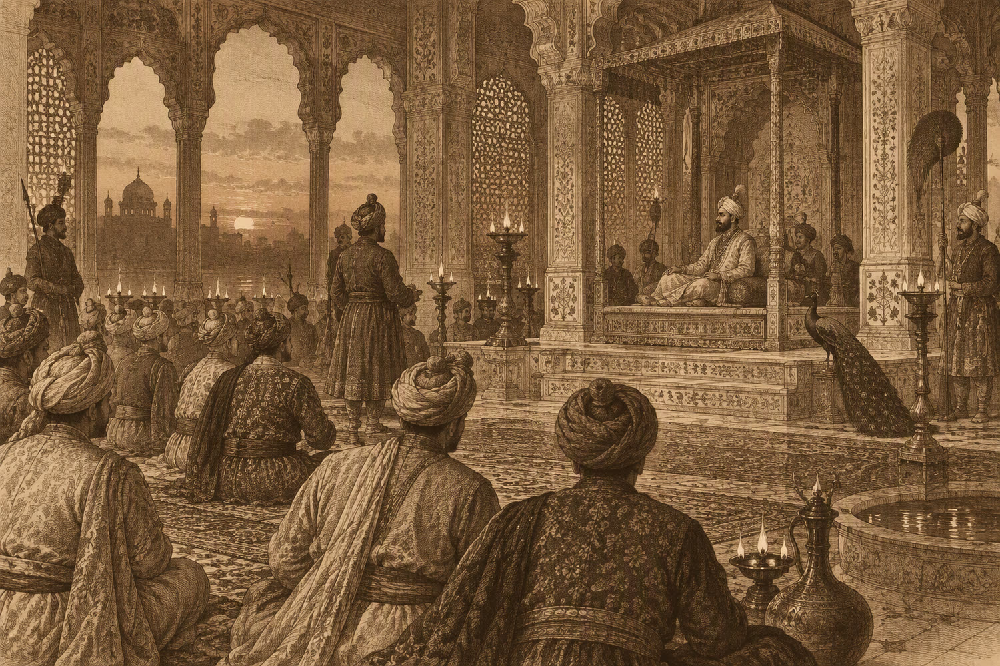

The Mughal Court
The last good year of a very good empire.
Filed by the corridor office
This dossier is reviewed every Thursday. Ratings describe the era as surveyed; your experience may vary by a century or two in either direction.
Dossier TT/001

Overview
Akbar is dying and the court has decided not to say so. The imperial atelier is finishing a manuscript that will outlast every person in the room, including the emperor, and the painters have been awake for three days. Outside, on the dry bed of the lake, the polo is still being played.
This is the last good year of the largest, wealthiest, most argumentative empire on earth. Our itinerary keeps you at the edges of power: the late audience, the kitchens, the workshop where thirty-seven painters share a single north-facing lamp. You will not meet the emperor. You will stand close enough to hear him breathe, and you will be asked, politely, to leave before the succession begins.
What you will see
The itinerary
What to bring
The Bureau supplies clothing, water, and a guide who will physically stop you from doing something interesting.
Not permitted
“I have never been so aware of the exact temperature of a room. Akbar's hall holds the heat of the day like a held breath. Four minutes in, I stopped taking notes and started listening.”
Era 001 · from T 1,480
One hour of paperwork.
Then the paperwork of history.
Your guide, your inoculations and your paradox insurance are arranged at the corridor desk. Children over twelve welcome; relatives from your own century are not.